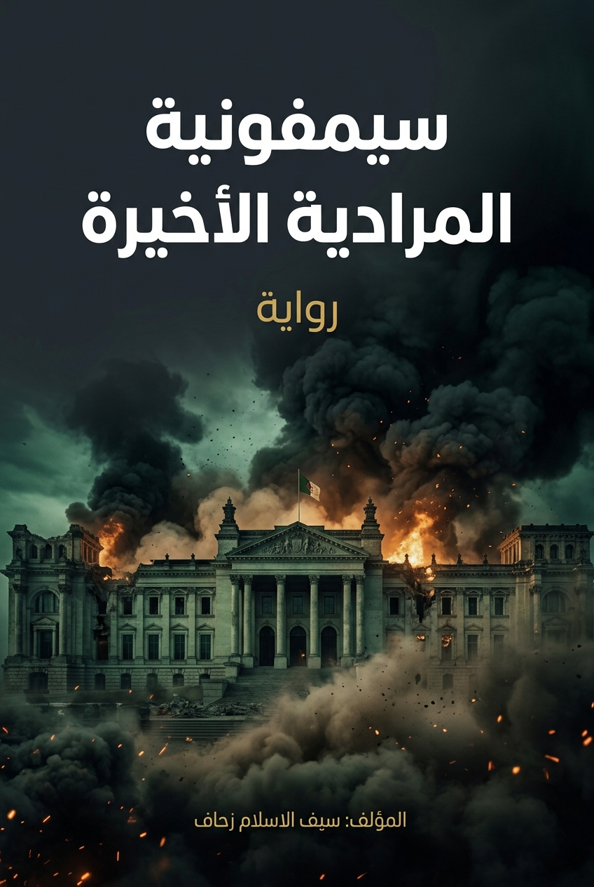

في ليلة حاسمة من تاريخ الجزائر، يقود العقيد رياض خطوط المواجهة الصامتة في دهاليز قصر المرادية لحماية العاصمة من هولوكوست نووي كاد يمسح الأرض ومن عليها. تتشابك الأحداث في رحلة بين أنفاق القصر السرية وملاحقات استخباراتية في وهران، حيث يلتقي الأبطال في مواجهة مصيرية بين الخونة والشرفاء. الرواية تستعرض صراعاً سياسياً وأمنياً ملحمياً، وتكشف عن مؤامرة عالمية تستهدف تفكيك الدولة الجزائرية من الداخل.
«الرئيس كاذب...» هكذا هتفت العناوين المرفوعة على التقارير التي وُضعت فوق مكتبه في قصر المرادية عند الساعة الثامنة صباحاً. لكن الحقيقة في بلادنا كانت دائماً: الرئيس لم يكن يكذب، بل كان الشعب يكذب عليه، والمدراء يزيفون له العناوين، والكل يشترك في هندسة لعبة "كل شيء تمام سيدي الرئيس"، بينما البالد تأكل لحماها من الداخل. بلال كان الشاب الوحيد الذي استلم مشعل الحقيقة من ياسين، وامتلك بيده "الخوارزمية الصاهرة" التي لا تجامل أحداً... ولهذا السبب عينه، كان عليه أن يواجه الموت قبل أذان الفجر بمواقيت وهران.
صمت مريب ذلك الذي يبتلع مخبر الأمن الرقمي في ضواحي وهران عند الساعة الثالثة وأربع عشرة دقيقة صباحاً. لم يكن يكسر حدة هذا السكون سوى الأزيز الخافت لستة سيرفرات ضخمة تعمل بكامل طاقتها، ومعهدها يحرق ذرات الهواء البارد لينشر طاقةً حاسوبية هائلة في الفضاء الضيق.
في قلب تلك العتمة، كان بلال يجلس أمام لوحة تحكم مليئة بالمفاتيح والأضواء المتلألئة، بينما كانت عيناه الحمراوان من قلة النوم تترصدان شريط الأكواد الذي يمر أمامه كسيل من البرق. كان يتتبع آخر تحديثات "السان الطاهر"، تلك المنظومة اللامركزية التي صممها تلميذ ياسين، والتي بدأت تُربِك حسابات اللوبيات الاقتصادية الفاسدة.
فجأة، توقف شريط الأكواد عن الجريان. ظهرت على الشاشة الرئيسية ثلاث كلمات بلون دم، تهز كيانه: "اختراق مستوى الصفر". تسمر بلال في مكانه للحظة، ثم بدأت أصابعه ترتجف وهو يحاول تتبع مصدر الاختراق. لكنه لم يجد هجوماً خارجياً؛ بل وجد "باباً خلفياً" مدمجاً في الشيفرة الأساسية منذ سنوات، باباً لم يضعه ياسين، بل زرعته أيادٍ خفية أثناء غيابه في الحرمين.
"خيانة من الداخل!" همس بلال بمرارة، وهو يدرك أن الخونة لم يكتفوا بالتجسس، بل زرعوا ألغاماً في قلب المنظومة التي كان يحسبها حصناً منيعاً. أخذ نفساً عميقاً، وبدأ بكتابة كود طوارئ عاجل لمنع "الباب الخلفي" من التمكين للقراصنة، لكن الوقت كان ضيقاً جداً.
في تلك اللحظة بالذات، وبينما كان يقاتل في فضاء الأكواد، سمع صوت انفجار مكتوم من الجهة الخلفية للمخبر. رفع رأسه ليرى وميضاً أزرق، ثم غطت عينيه ظلمة دامسة. لقد تم استهداف المقر بقنبلة كهرومغناطيسية موجهة، وبدأت كل أجهزة المخبر تلفظ أنفاسها الأخيرة.
"المنظومة الطاهرة" بدأت الآن في حماية بيانات اليقين وتشفيرها تمهيداً لإيصال الحقيقة كاملة إلى رأس الدولة بدون وسيط ولا مدراء يكذبون. توقف بلال في ظلم المبنى، ملتفتاً إلى الوراء وعيناه ترقبان الدخان المتصاعد الذي يبتلع حصنه القديم. المخبر انتهى، وبدأت سرياً معركة لن ينجو منها إلا من يملك ميزان الجرح والتعديل في دينه، وفي صلاته، وفي أمانة بياناته الرقمية ضد أمة تزيف وعيها بيديها.
On a decisive night in Algeria's history, Colonel Riyadh leads the silent lines of confrontation in the corridors of the Muradia Palace to protect the capital from a nuclear holocaust that almost wiped out the earth and those on it. The events intertwine in a journey between the palace's secret tunnels and intelligence pursuits in Oran, where heroes meet in a decisive confrontation between traitors and honorable men. The novel presents an epic political and security struggle, revealing a global conspiracy aimed at dismantling the Algerian state from within.
"The President is lying..." Thus shouted the headlines raised on the reports placed on his desk at the Muradia Palace at eight in the morning. But the truth in our country has always been: the President was not lying, but the people were lying to him, and the directors were forging headlines for him, and everyone was participating in engineering the game of "Everything is fine, Mr. President," while the country was eating itself from within. Billel was the only young man who received the torch of truth from Yassin, and held in his hand the "melting algorithm" that flatters no one... and for this very reason, he had to face death before the dawn call to prayer in Oran time.
An eerie silence engulfed the digital security lab on the outskirts of Oran at three-fourteen in the morning. Nothing broke this silence except the faint hum of six massive servers running at full capacity, their fans burning the cold air particles to release immense computing energy into the cramped space.
In the heart of that darkness, Billel sat before a control panel full of keys and twinkling lights, while his reddened eyes from lack of sleep watched the stream of codes passing before him like a lightning current. He was tracking the latest updates of "The Pure Tongue," that decentralized system designed by Yassin's disciple, which had begun to confuse the calculations of corrupt economic lobbies.
Suddenly, the code stream stopped running. Three blood-colored words appeared on the main screen, shaking his being: "Level Zero Breach." Billel froze for a moment, then his fingers began to tremble as he tried to trace the source of the breach. But he found no external attack; rather, he found a "backdoor" embedded in the foundational code from years ago, a door that Yassin did not place, but was planted by hidden hands during his absence in the Two Holy Mosques.
"Betrayal from within!" Billel whispered bitterly, realizing that the traitors had not only spied, but had planted mines in the heart of the system he thought was an impregnable fortress. He took a deep breath and began writing emergency code to prevent the "backdoor" from enabling hackers, but time was very short.
At that very moment, while he was fighting in the code space, he heard the sound of a muffled explosion from the rear of the lab. He looked up to see a blue flash, then deep darkness covered his eyes. The facility had been targeted with a directed electromagnetic pulse bomb, and all the lab's devices began to breathe their last.
"The Pure System" had now begun to protect and encrypt the data of certainty, preparing to deliver the complete truth to the head of state without intermediaries or lying managers. Billel stopped in the building's darkness, turning back with his eyes watching the rising smoke swallowing his old fortress. The lab was over, and a battle had secretly begun that only those with a balance of wounding and healing in their faith, in their prayer, and in the integrity of their digital data against a nation that falsifies its consciousness with its own hands would survive.
Par une nuit décisive de l'histoire de l'Algérie, le colonel Riyadh mène les lignes de confrontation silencieuses dans les couloirs du palais de la Muradia pour protéger la capitale d'un holocauste nucléaire qui a failli effacer la terre et ceux qui s'y trouvent. Les événements s'entremêlent dans un voyage entre les tunnels secrets du palais et les poursuites de renseignement à Oran, où les héros se rencontrent dans une confrontation décisive entre traîtres et hommes d'honneur. Le roman présente une lutte politique et sécuritaire épique, révélant une conspiration mondiale visant à démanteler l'État algérien de l'intérieur.
"Le Président ment..." C'est ainsi que les titres des rapports placés sur son bureau au palais de la Muradia à huit heures du matin ont crié. Mais la vérité dans notre pays a toujours été: le Président ne mentait pas, mais le peuple lui mentait, et les directeurs forgeaient des titres pour lui, et tout le monde participait à l'ingénierie du jeu de "Tout va bien, Monsieur le Président," pendant que le pays se dévorait de l'intérieur. Billel était le seul jeune homme à avoir reçu le flambeau de la vérité de Yassin, et à tenir dans sa main "l'algorithme fondant" qui ne flatte personne... et pour cette raison même, il devait faire face à la mort avant l'appel de l'aube à la prière à Oran.
Un silence étrange a englouti le laboratoire de sécurité numérique en périphérie d'Oran à trois heures quatorze du matin. Rien ne brisait ce silence sauf le faible bourdonnement de six serveurs massifs fonctionnant à pleine capacité, dont les ventilateurs brûlaient les particules d'air froid pour libérer une énorme énergie informatique dans l'espace exigu.
Au cœur de cette obscurité, Billel était assis devant un panneau de contrôle rempli de touches et de lumières clignotantes, tandis que ses yeux rougis par le manque de sommeil surveillaient le flux de codes qui passait devant lui comme un courant de foudre. Il suivait les dernières mises à jour de "La Langue Pure", ce système décentralisé conçu par le disciple de Yassin, qui avait commencé à perturber les calculs des lobbies économiques corrompus.
Soudain, le flux de codes s'arrêta. Trois mots de couleur sang apparurent sur l'écran principal, ébranlant son être: "Brèche de niveau zéro". Billel se figea un instant, puis ses doigts se mirent à trembler alors qu'il essayait de retracer la source de la brèche. Mais il ne trouva pas d'attaque externe; il trouva plutôt une "porte dérobée" intégrée dans le code fondamental depuis des années, une porte que Yassin n'avait pas placée, mais qui avait été plantée par des mains cachées pendant son absence dans les Deux Saintes Mosquées.
"Trahison de l'intérieur!" murmura amèrement Billel, réalisant que les traîtres n'avaient pas seulement espionné, mais avaient planté des mines au cœur du système qu'il croyait être une forteresse imprenable. Il prit une profonde inspiration et commença à écrire un code d'urgence pour empêcher la "porte dérobée" de permettre aux pirates d'accéder, mais le temps était très court.
À ce moment précis, alors qu'il combattait dans l'espace du code, il entendit le bruit d'une explosion sourde provenant de l'arrière du laboratoire. Il leva les yeux et vit un éclair bleu, puis une obscurité profonde couvrit ses yeux. L'installation avait été ciblée par une bombe à impulsion électromagnétique dirigée, et tous les appareils du laboratoire commencèrent à rendre leur dernier souffle.
"Le Système Pur" avait maintenant commencé à protéger et à chiffrer les données de la certitude, préparant la transmission de la vérité complète au chef de l'État sans intermédiaires ni gestionnaires menteurs. Billel s'arrêta dans l'obscurité du bâtiment, se retournant avec ses yeux regardant la fumée montante engloutir sa vieille forteresse. Le laboratoire était fini, et une bataille avait secrètement commencé que seuls ceux qui possèdent la balance de la blessure et de la guérison dans leur foi, dans leur prière, et dans l'intégrité de leurs données numériques contre une nation qui falsifie sa conscience de ses propres mains pourraient survivre.